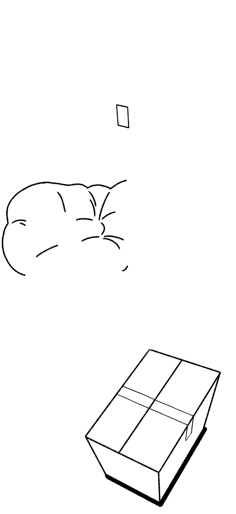
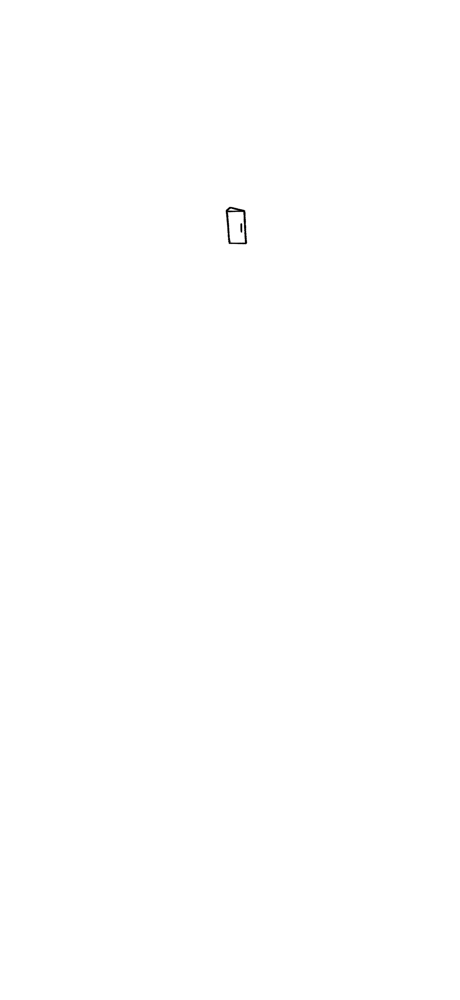
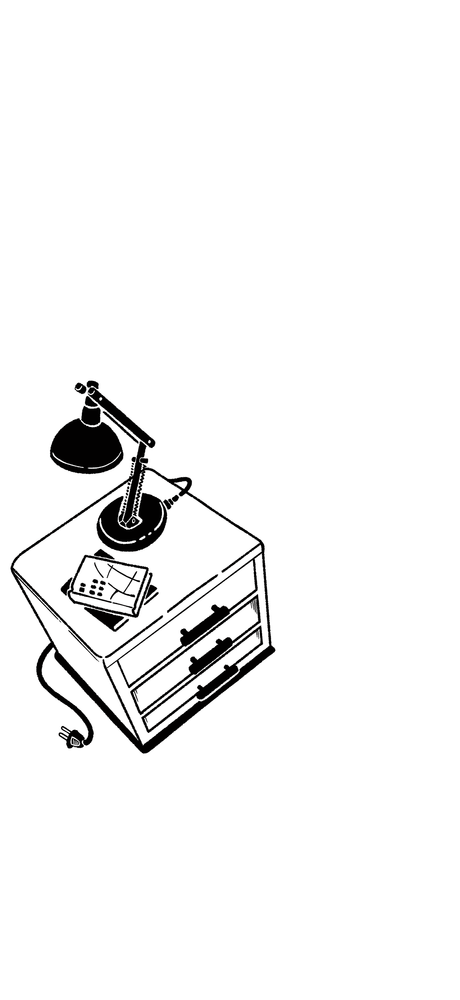
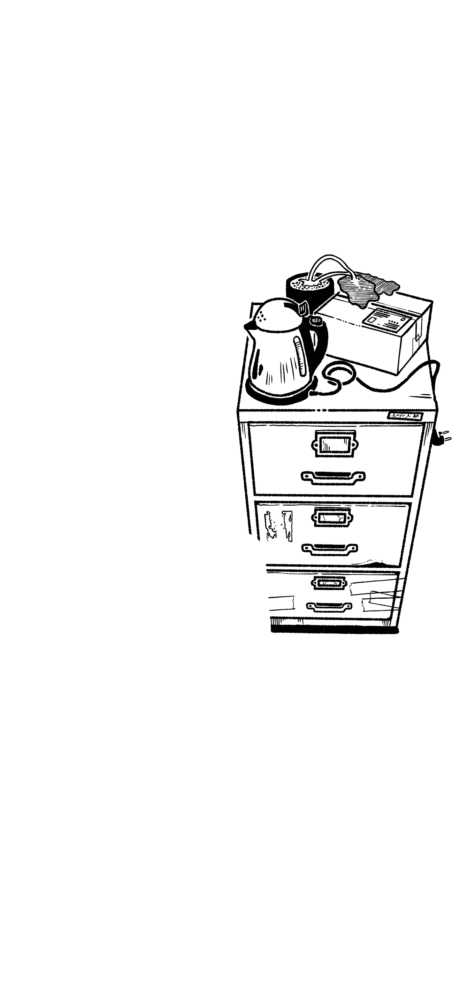
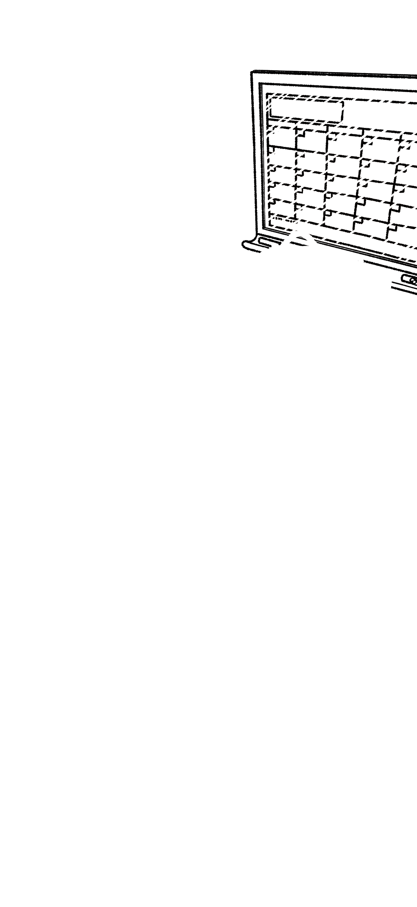

📍 꼭짓점 찍기 도구
대상을 선택하고, 화면에서
꼭짓점 4개
를 클릭하세요.
1. 스위치 (Switch)
2. 왼쪽 서랍 (Left Drawer)
3. 오른쪽 캐비닛 (Cabinet)
4. 포스터 (Poster)
5. 일정표 (Schedule)
6. 택배박스 (Box)
↺ 다시 찍기 (Reset)
💾 코드 생성 (Generate)
좌표를 다 찍고 [코드 생성]을 누르세요.
    